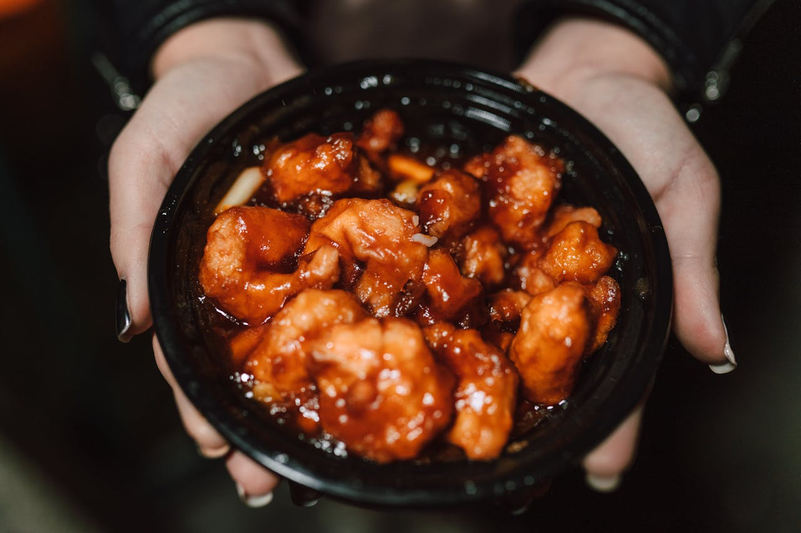

Sweet & Sour Sauce Recipe
All Odin Recipes

Description
This sweet and sour sauce is a fast,
flavor-packed mix of pineapple juice, vinegar, and sugar,
thickened to a glossy finish with a quick cornstarch slurry. Toss it with
stir-fried veggies or your favorite protein, and serve it hot over rice
for a simple homemade takeout-style meal.
Add minced garlic if you like a little extra bite.
Ingredients
Sauce Base:
- 2 tbsp sugar
- 3.5 cups pineapple juice
- 3 tbsp rice wine vinegar
- 120 ml hot water
- Salt or MSG, to taste
Cornstarch Slurry (for thickening):
- 2 tbsp cornstarch
- 2 tbsp water
Optional:
- Minced garlic (for extra bite)
- Stir-fry vegetables of choice
- Pineapple chunks
Sweet and Sour Sauce - Step-by-Step
-
Create the base sauce:
-
Add all sauce base ingredients into a bowl, add hot water last to
help melt granules
- Stir until smooth
-
Prepare the slurry (while pan is heating up):
- Mix slurry ingredients in a small bowl until fully combined
-
Tip: Don't let the slurry stand around too long without
stirring it again or it will become like cement
-
Optional - Stir-fry vegetables:
- Cut vegetables into large 1-2 cm pieces
- Stir-fry on high heat for 2-3 min
- Add pineapple chunks during last 30 seconds
-
Thicken the sauce:
-
Heat a sauce pan or wok over medium-high heat, if making veggies,
use that pan/wok
- Pour sauce into pan or wok (with veggies still in it)
-
Once the sauce begins to simmer, stir in the slurry bit by bit
- Keep stirring until the sauce thickens to your liking
-
Remove from heat but continue stirring briefly to prevent burning
- Optional: Add in minced garlic for extra bite
-
Serve:
- Toss protein of choice or tofu in sauce
- Serve over hot rice